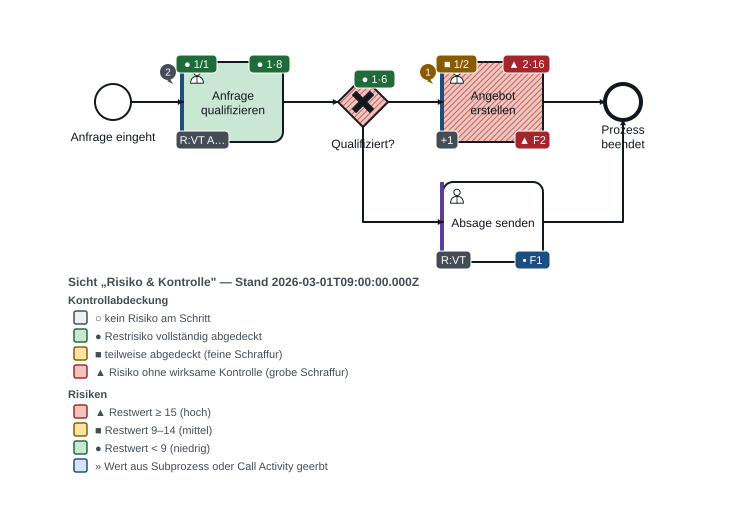
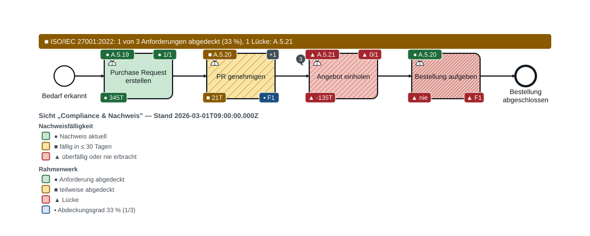
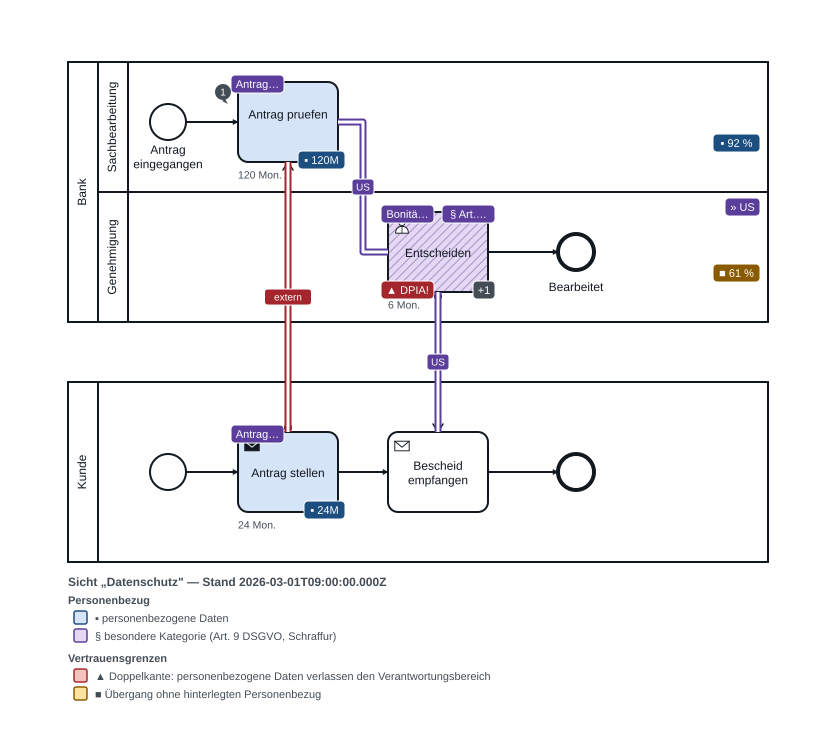
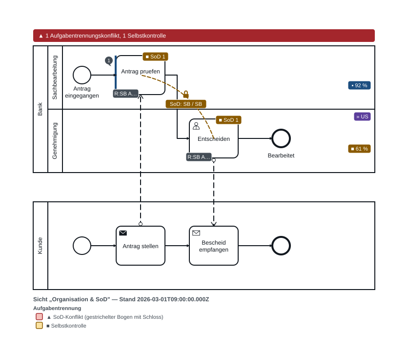
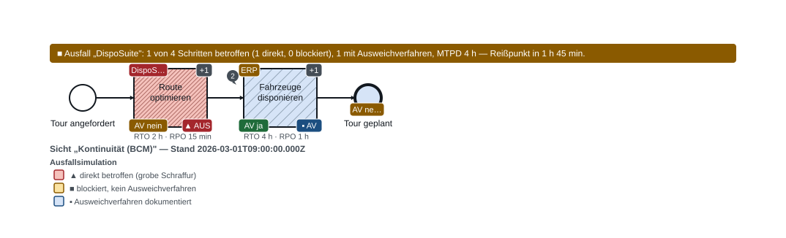
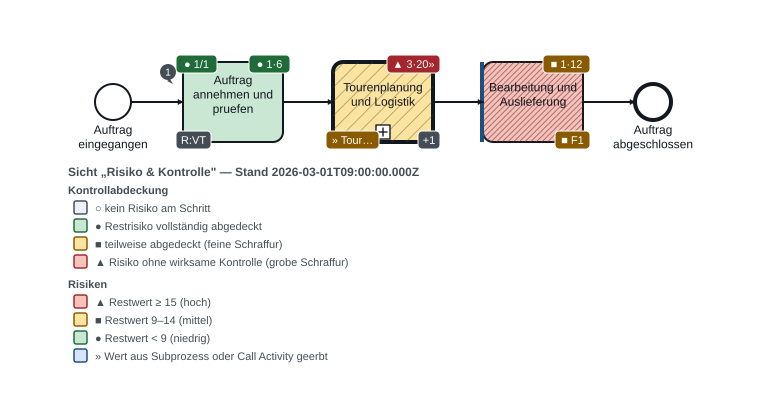
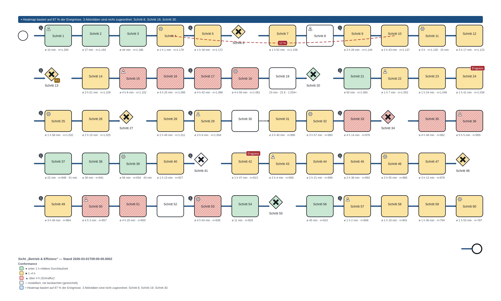
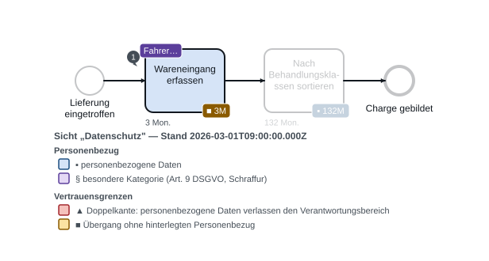

Echte Korpusdiagramme aus test/corpus/, erfundene, aber plausible GRC-Daten aus test/grc/fixtures.ts. Erzeugt von test/grc/render.test.ts.

Vertrieb — Risiko & Kontrolle F1 Kontrollabdeckungs-Heatmap (rot, grobe Schraffur an „Angebot erstellen“), F2 Risiko-Ampel, A3 Feststellungsampel, A4 LoD-Kante, F9 Kommentar-Pins Sicht: Risiko & Kontrolle — Wo ballt sich Restrisiko und wo fehlt die wirksame Kontrolle? Stand der GRC-Daten: 2026-03-01T09:00:00.000Z Textalternative

Beschaffung — Compliance & Nachweis F4 Nachweisfälligkeits-Ampel als Formkodierung, F8 Framework-Chips und Abdeckungsgrad in der Kopfzeile, F13 Kontrolltest-Badge Sicht: Compliance & Nachweis — Welche Schritte haben keinen frischen Nachweis — die Vorbereitungsfrage jedes Audits. Stand der GRC-Daten: 2026-03-01T09:00:00.000Z ISO/IEC 27001:2022: 1 von 3 Anforderungen abgedeckt (33 %), 1 Lücke: A.5.21. Textalternative

Kreditantrag — Datenschutz F5 Doppelkante mit Länderchip US über die Vertrauensgrenze, Personenbezug als Formkodierung, DPIA-Befund, F10 Aufbewahrungsfrist im Gutter Sicht: Datenschutz — Wo entstehen personenbezogene Daten, wohin fließen sie, wann werden sie gelöscht? Stand der GRC-Daten: 2026-03-01T09:00:00.000Z Kante Flow_B2: Vertrauensgrenze: Übergang von Sachbearbeitung nach ScoreWorks Inc. (Drittland, US). Es werden besondere Kategorien personenbezogener Daten übertragen. Keine Übermittlungsgarantie hinterlegt. Kante MessageFlow_1: Vertrauensgrenze: Übergang von Kunde nach Sachbearbeitung (externe Stelle). Es werden personenbezogene Daten übertragen. Kante MessageFlow_2: Vertrauensgrenze: Übergang von ScoreWorks Inc. nach Kunde (externe Stelle, US). Es werden besondere Kategorien personenbezogener Daten übertragen. Keine Übermittlungsgarantie hinterlegt. Textalternative

Kreditantrag — Organisation & SoD F3 SoD-Konfliktbogen mit Schloss zwischen den Lanes, Selbstkontroll-Warnung, R/A-Kürzel Sicht: Organisation & SoD — Aufgabentrennung zwischen Lanes — die klassische Prüfungsfrage jedes IKS-Audits. Stand der GRC-Daten: 2026-03-01T09:00:00.000Z 1 Aufgabentrennungskonflikt, 1 Selbstkontrolle. Textalternative

Tourenplanung — Ausfall von DispoSuite F6 Ausfallsimulation: betroffener Schritt schraffiert, Ausweichverfahren markiert, MTPD-Reißpunkt in der Kopfzeile, RTO/RPO im Gutter Sicht: Kontinuität (BCM) — Was steht still, wenn eine Anwendung ausfällt — und ab wann reißt das MTPD? Stand der GRC-Daten: 2026-03-01T09:00:00.000Z Ausfall „DispoSuite": 1 von 4 Schritten betroffen (1 direkt, 0 blockiert), 1 mit Ausweichverfahren, MTPD 4 h — Reißpunkt in 1 h 45 min. Textalternative

Auftragsabwicklung — Roll-up über die Call Activity F2 Risiko-Roll-up: die Call Activity erbt Risiko und Abdeckung des Zielprozesses (Pfeil ↗ am Badge) Sicht: Risiko & Kontrolle — Wo ballt sich Restrisiko und wo fehlt die wirksame Kontrolle? Stand der GRC-Daten: 2026-03-01T09:00:00.000Z Textalternative

Großer Prozess — Betrieb & Effizienz F7 Conformance-Heatmap mit ausgewiesener Abdeckungsquote, Kantenstärke nach Häufigkeit, roter Ist-Pfad, Slot-Budget mit Sammel-Badges Sicht: Betrieb & Effizienz — Modell gegen Wirklichkeit: Durchlaufzeiten, Engpässe, Abweichungen. Stand der GRC-Daten: 2026-03-01T09:00:00.000Z Heatmap basiert auf 87 % der Ereignisse. 3 Aktivitäten sind nicht zugeordnet: Schritt 8, Schritt 19, Schritt 30. Kante L_F0: Beobachtet in 1.200 Fällen. Kante L_F1: Beobachtet in 1.191 Fällen. Kante L_F2: Beobachtet in 1.182 Fällen. Kante L_F3: Beobachtet in 1.173 Fällen. Kante L_F4: Beobachtet in 1.164 Fällen. Kante L_F5: Beobachtet in 1.155 Fällen. Kante L_F6: Beobachtet in 1.146 Fällen. Kante L_F7: Beobachtet in 1.137 Fällen. Kante L_F8: Beobachtet in 1.128 Fällen. Kante L_F9: Beobachtet in 1.119 Fällen. Kante L_F10: Beobachtet in 1.110 Fällen. Kante L_F11: Beobachtet in 1.101 Fällen. Kante L_F12: Beobachtet in 1.092 Fällen. Kante L_F13: Beobachtet in 1.083 Fällen. Kante L_F14: Beobachtet in 1.074 Fällen. Kante L_F15: Beobachtet in 1.065 Fällen. Kante L_F16: Beobachtet in 1.056 Fällen. Kante L_F17: Beobachtet in 1.047 Fällen. Kante L_F18: Beobachtet in 1.038 Fällen. Kante L_F19: Beobachtet in 1.029 Fällen. Kante L_F20: Beobachtet in 1.020 Fällen. Kante L_F21: Beobachtet in 1.011 Fällen. Kante L_F22: Beobachtet in 1.002 Fällen. Kante L_F23: Beobachtet in 993 Fällen. Kante L_F24: Beobachtet in 984 Fällen. Kante L_F25: Beobachtet in 975 Fällen. Kante L_F26: Beobachtet in 966 Fällen. Kante L_F27: Beobachtet in 957 Fällen. Kante L_F28: Beobachtet in 948 Fällen. Kante L_F29: Beobachtet in 939 Fällen. Kante L_F30: Modelliert, aber nie beobachtet. Kante L_F31: Beobachtet in 921 Fällen. Kante L_F32: Beobachtet in 912 Fällen. Kante L_F33: Beobachtet in 903 Fällen. Kante L_F34: Beobachtet in 894 Fällen. Kante L_F35: Beobachtet in 885 Fällen. Kante L_F36: Beobachtet in 876 Fällen. Kante L_F37: Beobachtet in 867 Fällen. Kante L_F38: Beobachtet in 858 Fällen. Kante L_F39: Beobachtet in 849 Fällen. Kante L_F40: Beobachtet in 840 Fällen. Kante L_F41: Beobachtet in 831 Fällen. Kante L_F42: Beobachtet in 822 Fällen. Kante L_F43: Beobachtet in 813 Fällen. Kante L_F44: Beobachtet in 804 Fällen. Kante L_F45: Beobachtet in 795 Fällen. Kante L_F46: Beobachtet in 786 Fällen. Kante L_F47: Beobachtet in 777 Fällen. Kante L_F48: Beobachtet in 768 Fällen. Kante L_F49: Beobachtet in 759 Fällen. Kante L_F50: Beobachtet in 750 Fällen. Kante L_F51: Beobachtet in 741 Fällen. Kante L_F52: Beobachtet in 732 Fällen. Kante L_F53: Beobachtet in 723 Fällen. Kante L_F54: Beobachtet in 714 Fällen. Kante L_F55: Beobachtet in 705 Fällen. Kante L_F56: Beobachtet in 696 Fällen. Kante L_F57: Beobachtet in 687 Fällen. Kante L_F58: Beobachtet in 678 Fällen. Kante L_F59: Beobachtet in 669 Fällen. Kante L_F60: Beobachtet in 660 Fällen. Textalternative

Wareneingang — Aufbewahrung und Löschung F10 Löschsicht mit Filter „Löschfrist < 12 Monate“: nicht passende Schritte werden abgeblendet, nie ausgeblendet Sicht: Datenschutz — Wo entstehen personenbezogene Daten, wohin fließen sie, wann werden sie gelöscht? Stand der GRC-Daten: 2026-03-01T09:00:00.000Z Textalternative